Show code
library(here)
library(tidyverse)
library(knitr)
library(kableExtra)TMB State-Space Ricker Model — v1.14
Bull Trout SSP Team
March 14, 2026
# ── Version identifiers ──────────────────────────────────────────────────────
DataVersion <- "1_2"
ModelVersion <- "1_14"
RunVersion <- "1_14"
FunctionVersion <- "1_4"
SaveName <- paste0("MPVA_Fit_D", DataVersion, "_M", ModelVersion, "_R", RunVersion)
# ── Helper functions ─────────────────────────────────────────────────────────
source(here("Code", paste0("MPVA_Functions", FunctionVersion, ".R")))
# ── Load data (population names, years, covariates) ─────────────────────────
source(here("Code", paste0("PrepareData_MPVA", DataVersion, ".R")))Populations: 61
Core areas: 11
Years: 39 ( 1984 - 2022 )
Redd sites: 83
CPUE obs: 0 across 0 sections
temp_mean: 10.054 | temp_sd: 1.535
All dimension checks passed.<environment: R_GlobalEnv>This document presents results from a hierarchical state-space Ricker model for bull trout (Salvelinus confluentus) fitted to redd count time series across multiple local populations nested within core areas.
The model uses a three-level spatial structure:
| Level | Unit | N |
|---|---|---|
| Core area | Watershed complex | 11 |
| Local population | Spawning tributary | 61 |
| Survey site | Redd count reach | 83 |
year_range <- range(DatYears)
n_obs <- sum(!is.na(data_list$ReddCounts))
n_possible <- prod(dim(data_list$ReddCounts))
data.frame(
Metric = c("Years", "Core areas", "Local populations",
"Survey sites", "Site-year observations", "Data coverage"),
Value = c(
paste(year_range[1], "–", year_range[2]),
data_list$nCore,
data_list$nPop,
data_list$nSites,
n_obs,
paste0(round(100 * n_obs / n_possible, 1), "%")
)
) |>
kable(col.names = c("Metric", "Value")) |>
kable_styling(bootstrap_options = c("striped", "hover"), full_width = FALSE)| Metric | Value |
|---|---|
| Years | 1984 – 2022 |
| Core areas | 11 |
| Local populations | 61 |
| Survey sites | 83 |
| Site-year observations | 1950 |
| Data coverage | 60.2% |
The latent population abundance follows a density-dependent Ricker process:
\[\log N_{p,t} = \log N_{p,t-1} + R_{p,t} + \varepsilon_{p,t}\]
where the instantaneous growth rate is:
\[R_{p,t} = b_{0r,p} + \beta_{\text{Flow},p} \cdot \text{Flow}_{p,t-1} + \beta_{\text{Temp},p} \cdot T_{p,t-1} + \beta_{\text{Temp}_2} \cdot T_{p,t-1}^2 + \beta_{\text{INV},p} \cdot \text{INV}_{p,t-1} + \beta_{\text{LKT},c} \cdot \text{LKT}_{c,t-1} - \phi_p \cdot D_{p,t-1}\]
All dynamic covariates carry an effective lag of 6 years (5-year R-side lag + 1-year C++ indexing), reflecting the time from in-gravel incubation to adult redd counts.
Redd counts at each survey site follow a Poisson distribution:
\[C_{s,y} \sim \text{Poisson}\!\left(0.5 \cdot N_{p,y} \cdot \pi_s\right)\]
where \(\pi_s\) is the fraction of population habitat surveyed at site \(s\). The factor of 0.5 converts spawning adults to females (one redd per female).
| Parameter | Hierarchy |
|---|---|
| Baseline growth rate \(b_{0r}\) | Global → Core → Population |
| Density dependence \(\phi\) | Global → Core → Population |
| Flow slope \(\beta_\text{Flow}\) | Global hyper-mean → Population |
| Temperature slope \(\beta_\text{Temp}\) | Global hyper-mean → Population |
| Invasive slope \(\beta_\text{INV}\) | Global hyper-mean → Population |
| Lake trout slope \(\beta_\text{LKT}\) | Global hyper-mean → Core area |
| Adfluvial access, valley bottom | Global scalar on \(b_{0r}\) mean |
| W95 winter flood frequency, road density | Global scalar on \(b_{0r}\) mean |
conv_label <- ifelse(optB$convergence == 0, "Converged (0)",
paste("Not converged (", optB$convergence, ")"))
max_grad <- max(abs(fit_rep$gradient.fixed))
data.frame(
Metric = c("Convergence code", "Negative log-likelihood", "Max |gradient|"),
Value = c(conv_label, round(optB$objective, 2), formatC(max_grad, format = "e", digits = 2))
) |>
kable(col.names = c("Metric", "Value")) |>
kable_styling(bootstrap_options = c("striped", "hover"), full_width = FALSE)| Metric | Value |
|---|---|
| Convergence code | Not converged ( 1 ) |
| Negative log-likelihood | 8862.06 |
| Max |gradient| | 5.87e+00 |
Estimated latent abundances (number of adult spawners) for each local population, smoothed by the state-space model.
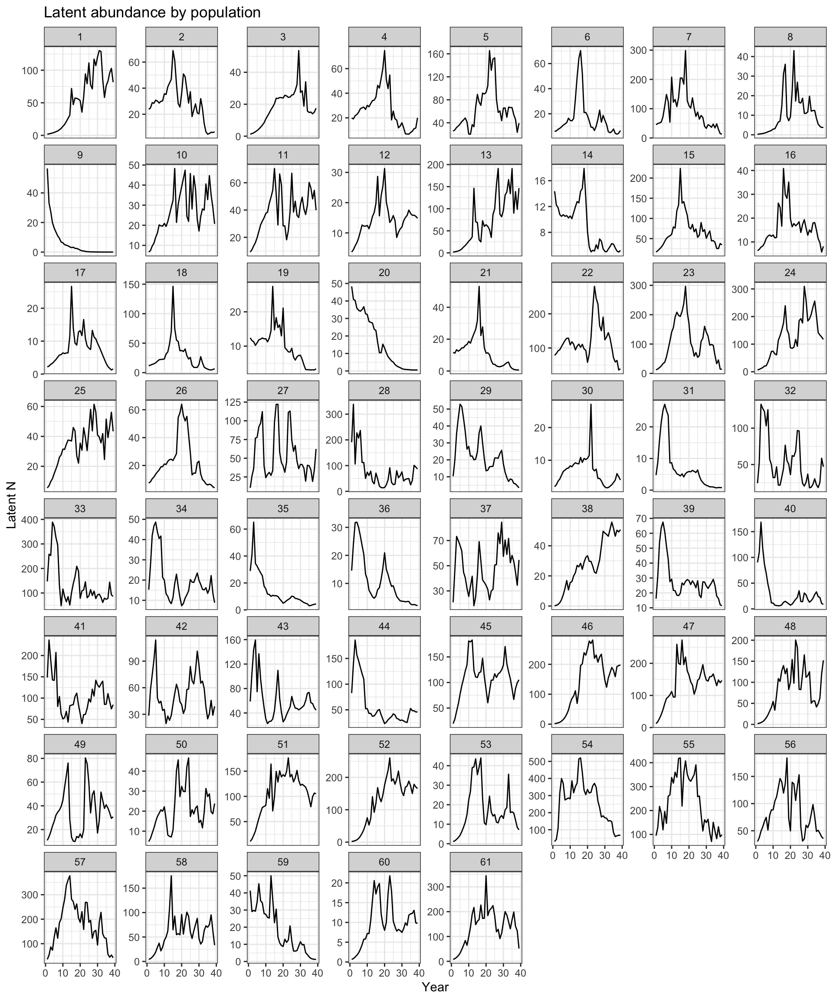
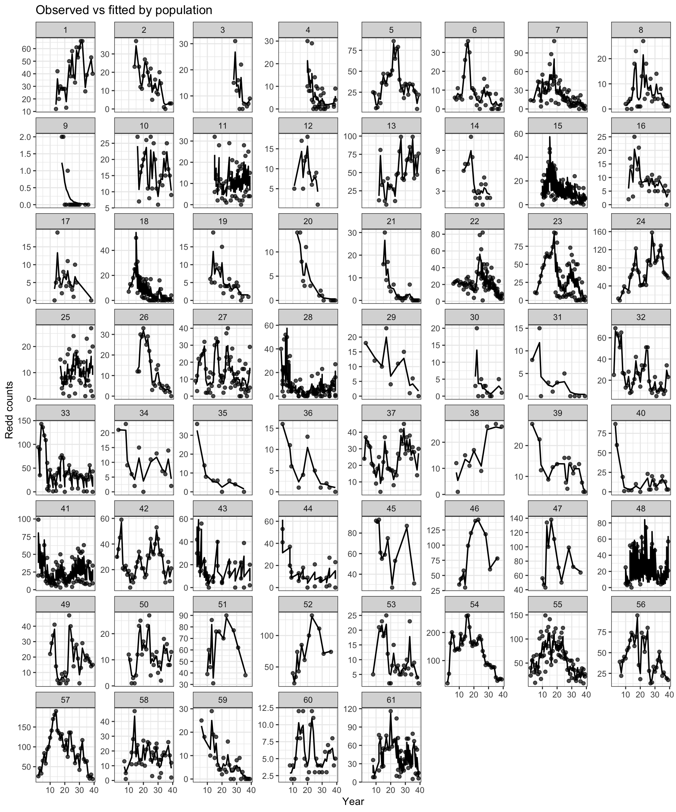
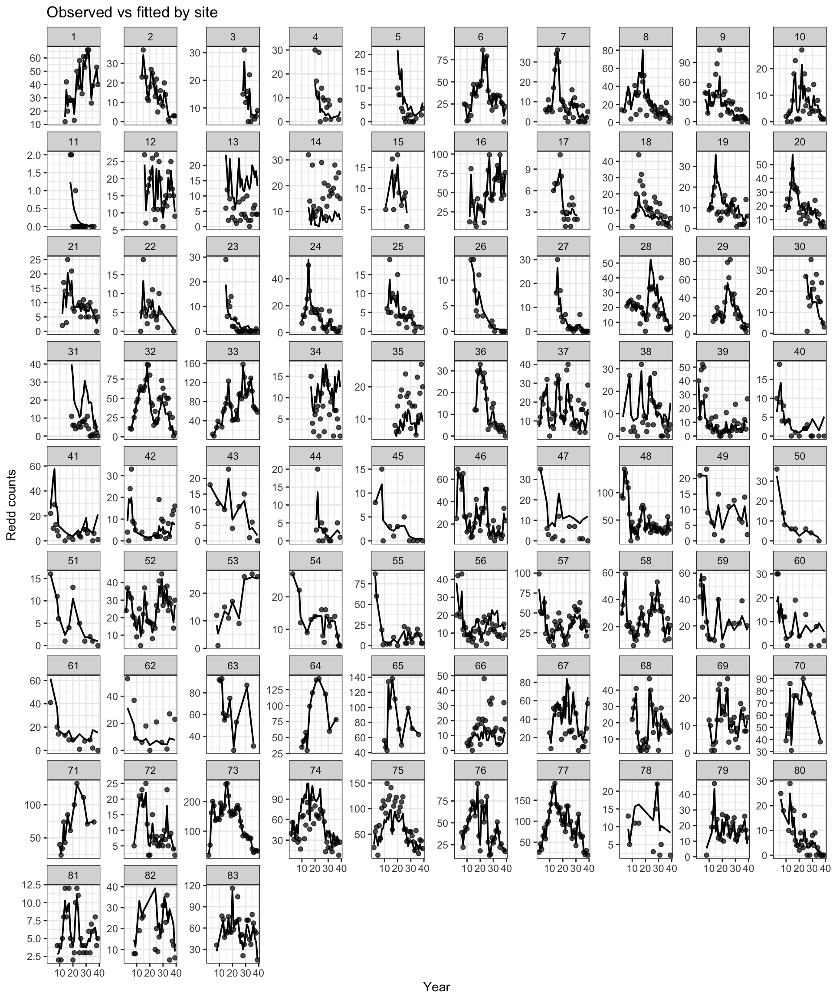
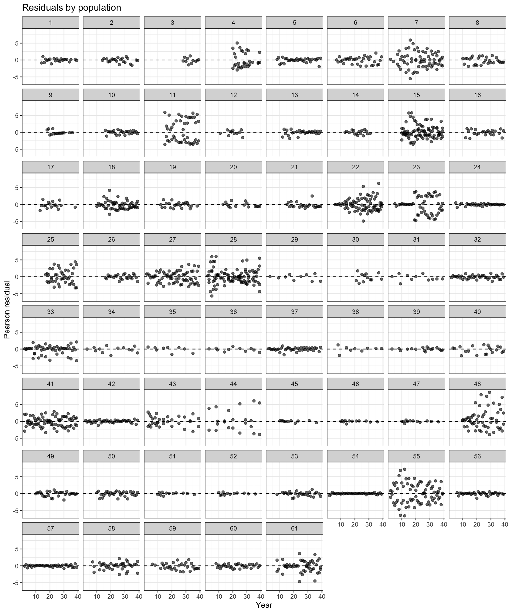
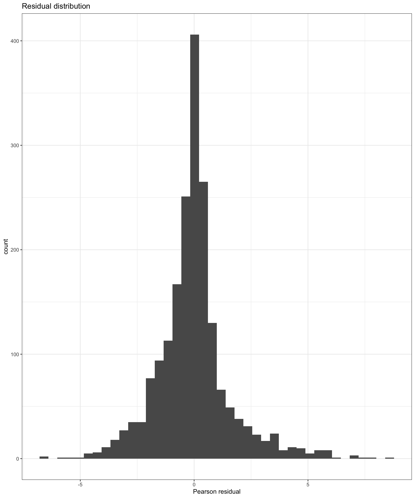
Worst-fitting sites:
# A tibble: 15 × 6
pop site n rmse mean_pearson sd_pearson
<fct> <fct> <int> <dbl> <dbl> <dbl>
1 55 75 38 24.8 2.15 2.24
2 55 74 38 24.3 -2.03 1.95
3 23 31 20 15.1 -2.92 1.20
4 28 41 18 14.5 -2.23 1.39
5 7 9 33 13.7 0.843 2.24
6 7 8 33 13.0 -0.888 1.94
7 48 67 27 12.4 -1.28 1.42
8 44 62 11 12.3 2.25 2.96
9 23 32 34 12.0 1.28 1.56
10 48 66 29 11.9 2.55 2.96
11 11 14 23 11.3 3.50 1.61
12 44 61 11 11.3 -1.71 1.66
13 61 82 20 11.1 -1.23 1.68
14 11 13 23 10.7 -2.56 0.805
15 22 30 14 10.6 1.25 2.66 dfN <- fit_plots$latent
df_obsfit <- fit_plots$fit
df_resid <- fit_plots$resid
dfN |>
mutate(
year_actual = DatYears[year],
pop_name = U_LocalPops_In[pop],
core_name = U_CoreAreas_In[pop_core_vec[pop]]
) |>
ggplot(aes(x = year_actual, y = N, color = core_name)) +
geom_line(linewidth = 0.8) +
facet_wrap(~pop_name, scales = "free_y", ncol = 4) +
scale_color_brewer(palette = "Set2", name = "Core area") +
labs(x = "Year", y = "Latent Abundance (N)",
title = "Estimated Bull Trout Spawner Abundance by Population") +
theme_bw(base_size = 11) +
theme(legend.position = "bottom",
strip.text = element_text(size = 7))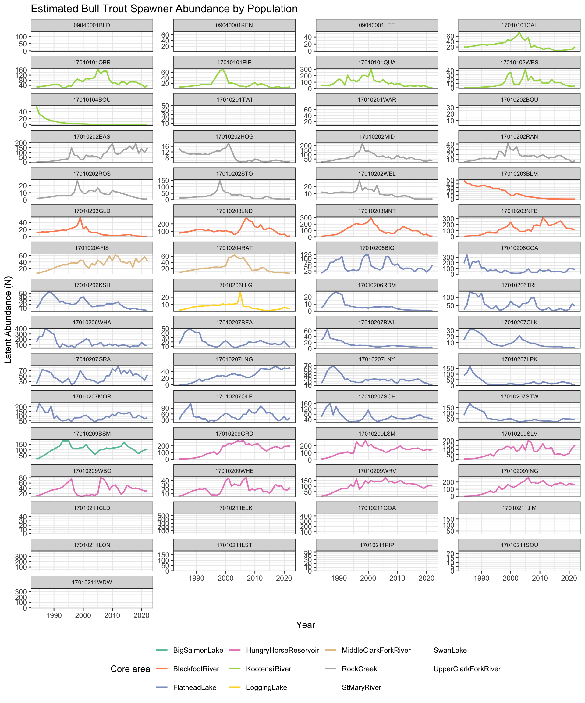
df_obsfit |>
mutate(
year_actual = DatYears[year],
pop_name = U_LocalPops_In[pop]
) |>
ggplot(aes(x = year_actual)) +
geom_point(aes(y = y_obs), alpha = 0.6, size = 1.2, color = "grey40") +
geom_line(aes(y = mu), linewidth = 0.8, color = "steelblue") +
facet_wrap(~pop_name, scales = "free_y", ncol = 4) +
labs(x = "Year", y = "Redd Counts",
title = "Observed (points) vs Fitted (line) Redd Counts",
caption = "Blue line = Poisson mean (0.5 × N × survey fraction); grey points = observed counts") +
theme_bw(base_size = 11) +
theme(strip.text = element_text(size = 7))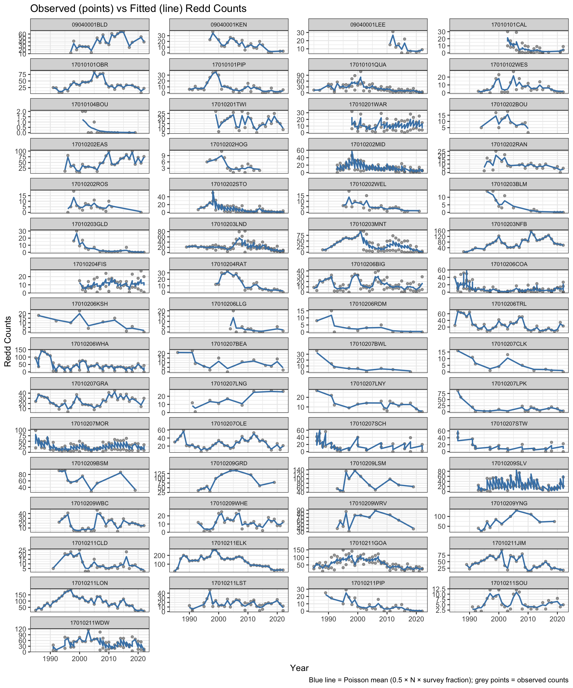
df_obsfit |>
ggplot(aes(x = mu, y = y_obs)) +
geom_point(alpha = 0.4, size = 1.5) +
geom_abline(slope = 1, intercept = 0, color = "steelblue", linetype = 2, linewidth = 1) +
scale_x_continuous(trans = "log1p", labels = scales::comma) +
scale_y_continuous(trans = "log1p", labels = scales::comma) +
labs(x = "Fitted (Poisson mean, log1p scale)", y = "Observed (log1p scale)",
title = "Observed vs Fitted — All Site-Years") +
theme_bw()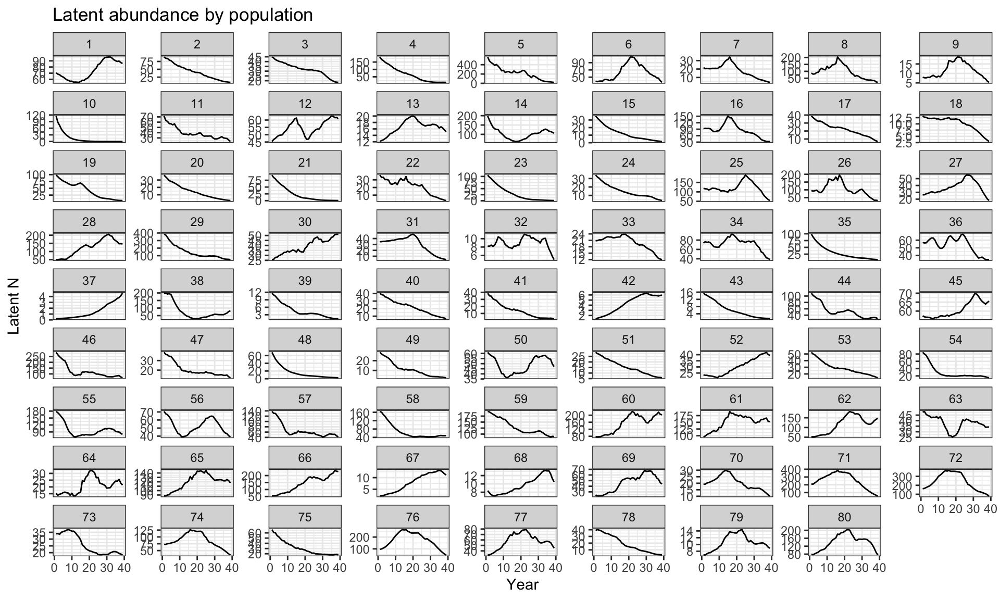
df_resid |>
mutate(
year_actual = DatYears[year],
pop_name = U_LocalPops_In[pop]
) |>
ggplot(aes(x = year_actual, y = pearson)) +
geom_hline(yintercept = 0, linetype = 2, color = "grey50") +
geom_point(alpha = 0.5, size = 1.2) +
geom_smooth(method = "loess", se = FALSE, color = "steelblue", linewidth = 0.7) +
facet_wrap(~pop_name, ncol = 4) +
labs(x = "Year", y = "Pearson Residual",
title = "Pearson Residuals Through Time") +
theme_bw(base_size = 11) +
theme(strip.text = element_text(size = 7))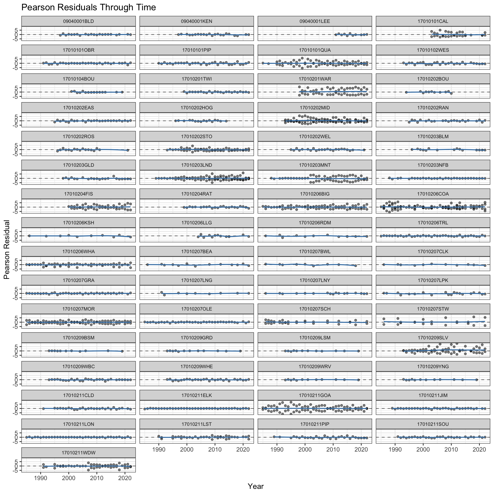
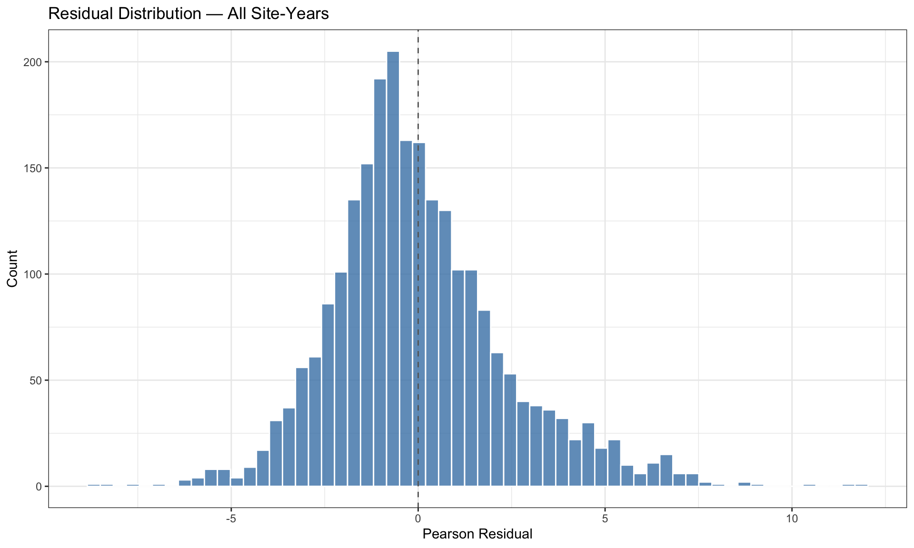
These covariates shift the prior mean of the population-level growth rate intercept (\(b_{0r,p}\)).
extract_fe <- function(par_name) {
v <- fit_rep$value[names(fit_rep$value) == par_name]
se <- fit_rep$sd[names(fit_rep$value) == par_name]
if (!length(v)) return(NULL)
data.frame(Parameter = par_name, Estimate = v[1], SE = se[1],
Lower95 = v[1] - 1.96 * se[1],
Upper95 = v[1] + 1.96 * se[1])
}
global_pars <- c("bAdf", "bVB", "bFlood", "bRD", "bLKT_M")
global_df <- bind_rows(lapply(global_pars, extract_fe)) |>
mutate(
Label = c("Adfluvial access", "Valley bottom width (VB)",
"W95 winter flood frequency", "Road density (valley bottom)",
"Lake trout ratio (cross-system mean)"),
sig = ifelse(Lower95 > 0 | Upper95 < 0, "*", "")
)
global_df |>
ggplot(aes(x = reorder(Label, Estimate), y = Estimate)) +
geom_hline(yintercept = 0, linetype = 2, color = "grey50") +
geom_errorbar(aes(ymin = Lower95, ymax = Upper95), width = 0.25, linewidth = 0.8) +
geom_point(size = 3, color = "steelblue") +
geom_text(aes(label = sig, y = Upper95 + 0.02), size = 5, color = "tomato") +
coord_flip() +
labs(x = NULL, y = "Coefficient estimate (95% CI)",
title = "Static Covariate Effects on Baseline Growth Rate",
caption = "* = 95% CI excludes zero") +
theme_bw()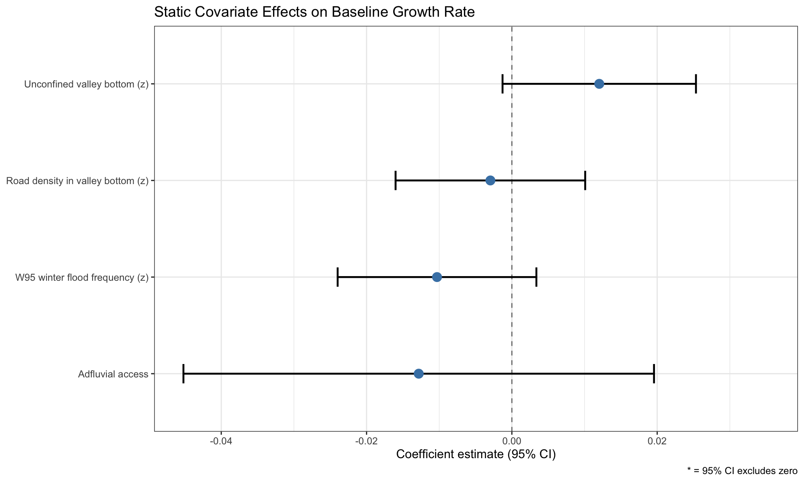
Bull trout growth rate shows a unimodal response to water temperature (linear + negative quadratic).
Each local population has its own sensitivity to summer streamflow, drawn from a global hyper-distribution (dashed red line = hyper-mean).
if (covar_config$use_Flow == 1) {
bFlow_vals <- fit_rep$value[names(fit_rep$value) == "bFlow_pop"]
bFlow_ses <- fit_rep$sd[names(fit_rep$value) == "bFlow_pop"]
bFlow_M <- fit_rep$value[names(fit_rep$value) == "bFlow_M"][1]
data.frame(
pop_name = U_LocalPops_In,
core_name = U_CoreAreas_In[pop_core_vec],
estimate = bFlow_vals,
se = bFlow_ses
) |>
ggplot(aes(x = reorder(pop_name, estimate), y = estimate, color = core_name)) +
geom_hline(yintercept = 0, linetype = 2, color = "grey50") +
geom_hline(yintercept = bFlow_M, linetype = 3, color = "tomato", linewidth = 0.8) +
geom_errorbar(aes(ymin = estimate - 1.96 * se,
ymax = estimate + 1.96 * se), width = 0.4, alpha = 0.7) +
geom_point(size = 2.5) +
annotate("text", x = 1, y = bFlow_M,
label = paste0("Hyper-mean = ", round(bFlow_M, 3)),
hjust = 0, vjust = -0.6, color = "tomato", size = 3.5) +
coord_flip() +
scale_color_brewer(palette = "Set2", name = "Core area") +
labs(x = NULL, y = "Flow slope (bFlow_pop)",
title = "Summer Streamflow Effect on Growth Rate by Population") +
theme_bw() +
theme(legend.position = "right")
}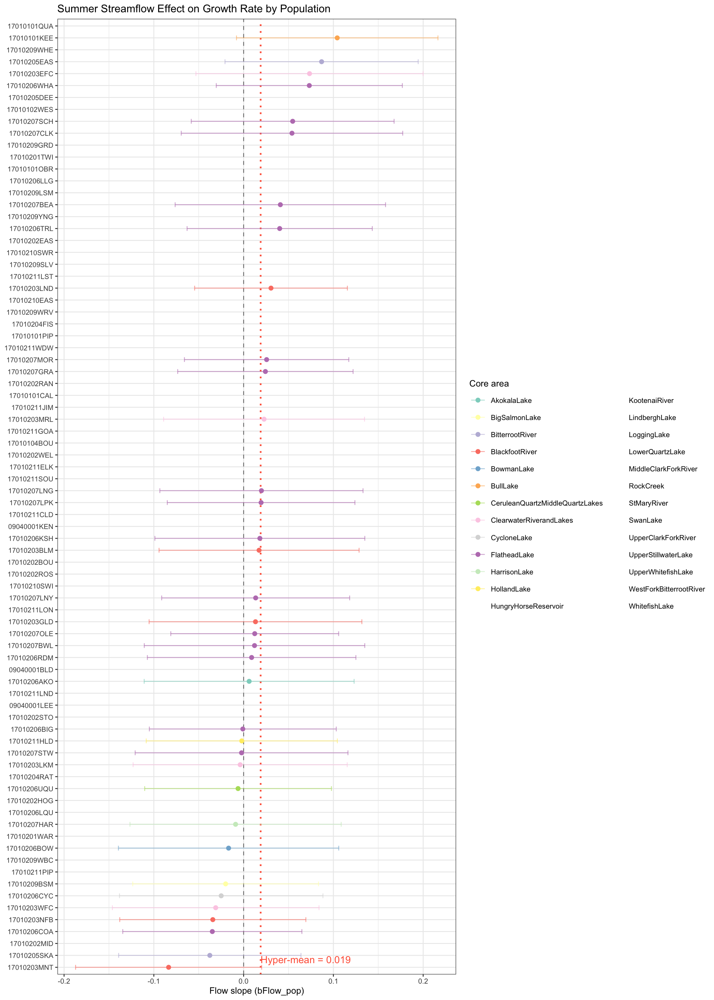
if (covar_config$use_Temp == 1) {
bTemp_vals <- fit_rep$value[names(fit_rep$value) == "bTemp_pop"]
bTemp_ses <- fit_rep$sd[names(fit_rep$value) == "bTemp_pop"]
bTemp_M <- fit_rep$value[names(fit_rep$value) == "bTemp_M"][1]
data.frame(
pop_name = U_LocalPops_In,
core_name = U_CoreAreas_In[pop_core_vec],
estimate = bTemp_vals,
se = bTemp_ses
) |>
ggplot(aes(x = reorder(pop_name, estimate), y = estimate, color = core_name)) +
geom_hline(yintercept = 0, linetype = 2, color = "grey50") +
geom_hline(yintercept = bTemp_M, linetype = 3, color = "tomato", linewidth = 0.8) +
geom_errorbar(aes(ymin = estimate - 1.96 * se,
ymax = estimate + 1.96 * se), width = 0.4, alpha = 0.7) +
geom_point(size = 2.5) +
annotate("text", x = 1, y = bTemp_M,
label = paste0("Hyper-mean = ", round(bTemp_M, 3)),
hjust = 0, vjust = -0.6, color = "tomato", size = 3.5) +
coord_flip() +
scale_color_brewer(palette = "Set2", name = "Core area") +
labs(x = NULL, y = "Temperature linear slope (bTemp_pop)",
title = "August Temperature Linear Effect on Growth Rate by Population",
caption = "Note: global quadratic (bTemp2) is negative — combined effect is unimodal") +
theme_bw() +
theme(legend.position = "right")
}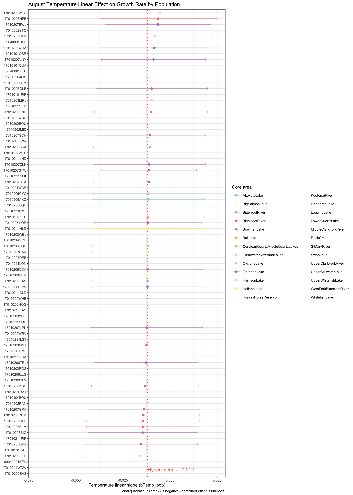
if (covar_config$use_INV == 1) {
bINV_vals <- fit_rep$value[names(fit_rep$value) == "bINV_pop"]
bINV_ses <- fit_rep$sd[names(fit_rep$value) == "bINV_pop"]
bINV_M <- fit_rep$value[names(fit_rep$value) == "bINV_M"][1]
data.frame(
pop_name = U_LocalPops_In,
core_name = U_CoreAreas_In[pop_core_vec],
estimate = bINV_vals,
se = bINV_ses
) |>
ggplot(aes(x = reorder(pop_name, estimate), y = estimate, color = core_name)) +
geom_hline(yintercept = 0, linetype = 2, color = "grey50") +
geom_hline(yintercept = bINV_M, linetype = 3, color = "tomato", linewidth = 0.8) +
geom_errorbar(aes(ymin = estimate - 1.96 * se,
ymax = estimate + 1.96 * se), width = 0.4, alpha = 0.7) +
geom_point(size = 2.5) +
annotate("text", x = 1, y = bINV_M,
label = paste0("Hyper-mean = ", round(bINV_M, 3)),
hjust = 0, vjust = -0.6, color = "tomato", size = 3.5) +
coord_flip() +
scale_color_brewer(palette = "Set2", name = "Core area") +
labs(x = NULL, y = "Invasive ratio slope (bINV_pop)",
title = "Non-Native Trout Ratio Effect on Growth Rate by Population") +
theme_bw() +
theme(legend.position = "right")
}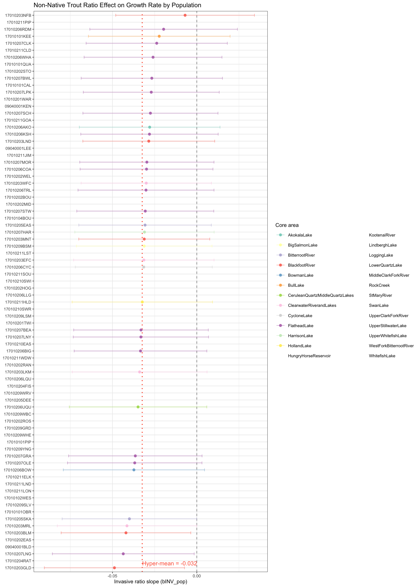
if (covar_config$use_LKT == 1) {
bLKT_vals <- fit_rep$value[names(fit_rep$value) == "bLKT_core"]
bLKT_ses <- fit_rep$sd[names(fit_rep$value) == "bLKT_core"]
bLKT_M <- fit_rep$value[names(fit_rep$value) == "bLKT_M"][1]
data.frame(
core_name = U_CoreAreas_In,
estimate = bLKT_vals,
se = bLKT_ses
) |>
ggplot(aes(x = reorder(core_name, estimate), y = estimate)) +
geom_hline(yintercept = 0, linetype = 2, color = "grey50") +
geom_hline(yintercept = bLKT_M, linetype = 3, color = "tomato", linewidth = 0.8) +
geom_errorbar(aes(ymin = estimate - 1.96 * se,
ymax = estimate + 1.96 * se), width = 0.25, linewidth = 0.8) +
geom_point(size = 3, color = "steelblue") +
annotate("text", x = 1, y = bLKT_M,
label = paste0("Hyper-mean = ", round(bLKT_M, 3)),
hjust = 0, vjust = -0.6, color = "tomato", size = 3.5) +
coord_flip() +
labs(x = NULL, y = "Lake trout slope (bLKT_core)",
title = "Lake Trout Ratio Effect on Growth Rate by Core Area") +
theme_bw()
}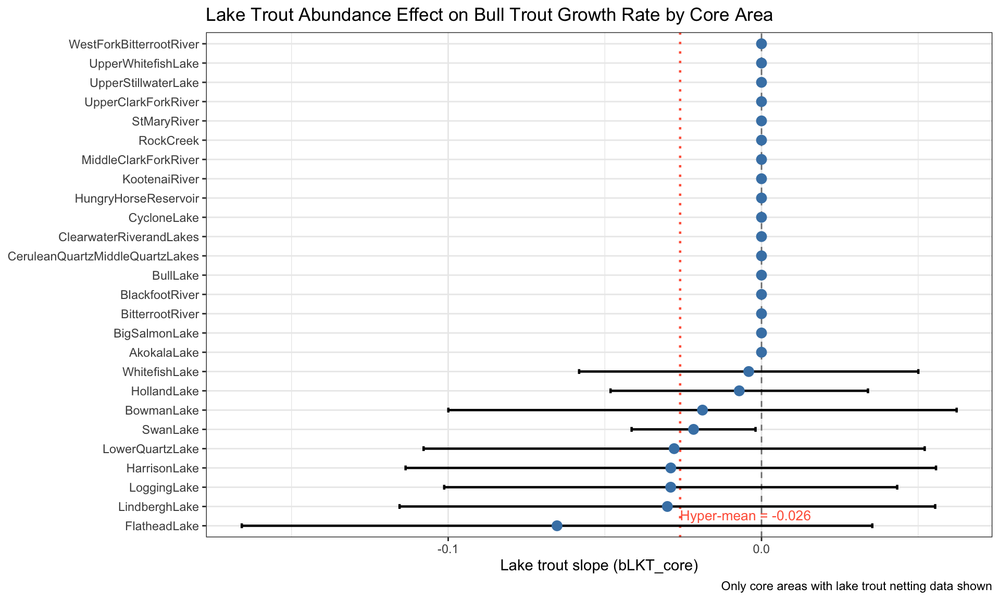
b0r_df <- data.frame(
pop_name = U_LocalPops_In,
core_name = U_CoreAreas_In[pop_core_vec],
b0r = fit_rep$value[names(fit_rep$value) == "b0r_pop"],
b0r_se = fit_rep$sd[names(fit_rep$value) == "b0r_pop"]
)
ggplot(b0r_df, aes(x = reorder(pop_name, b0r), y = b0r, color = core_name)) +
geom_hline(yintercept = 0, linetype = 2, color = "grey50") +
geom_errorbar(aes(ymin = b0r - 1.96 * b0r_se,
ymax = b0r + 1.96 * b0r_se), width = 0.4, alpha = 0.7) +
geom_point(size = 2.5) +
coord_flip() +
scale_color_brewer(palette = "Set2", name = "Core area") +
labs(x = NULL, y = "Baseline growth rate (b0r_pop)",
title = "Population-Level Baseline Growth Rates",
caption = "Positive = growing at mean covariate conditions; negative = declining") +
theme_bw()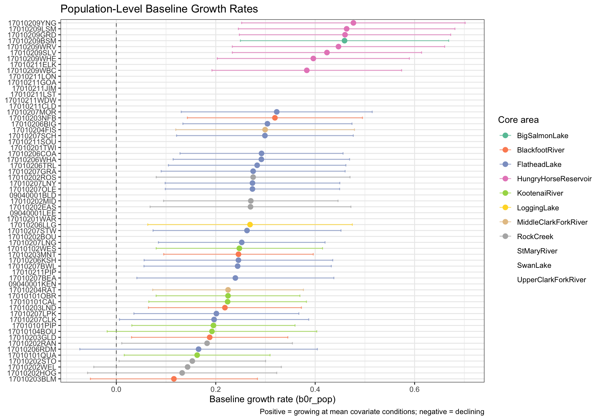
sigma_pars <- c(
"sigmaN" = "Process error (σ_N)",
"sigma_b0r_core" = "Growth rate: core SD",
"sigma_b0r_pop" = "Growth rate: pop SD",
"sigma_b0phi_pop" = "Density dependence: pop SD",
"sigma_bFlow" = "Flow slope: pop SD",
"sigma_bTemp" = "Temp slope: pop SD",
"sigma_bINV" = "Invasive slope: pop SD",
"sigma_bLKT" = "Lake trout slope: core SD"
)
sigma_df <- lapply(names(sigma_pars), function(nm) {
v <- fit_rep$value[names(fit_rep$value) == nm]
se <- fit_rep$sd[names(fit_rep$value) == nm]
if (!length(v)) return(NULL)
data.frame(Label = sigma_pars[nm], Estimate = v[1], SE = se[1])
}) |> bind_rows()
sigma_df |>
mutate(Lower95 = pmax(0, Estimate - 1.96 * SE),
Upper95 = Estimate + 1.96 * SE) |>
ggplot(aes(x = reorder(Label, Estimate), y = Estimate)) +
geom_errorbar(aes(ymin = Lower95, ymax = Upper95), width = 0.25, linewidth = 0.8) +
geom_point(size = 3, color = "steelblue") +
coord_flip() +
labs(x = NULL, y = "Standard deviation estimate (95% CI)",
title = "Variance Component Estimates") +
theme_bw()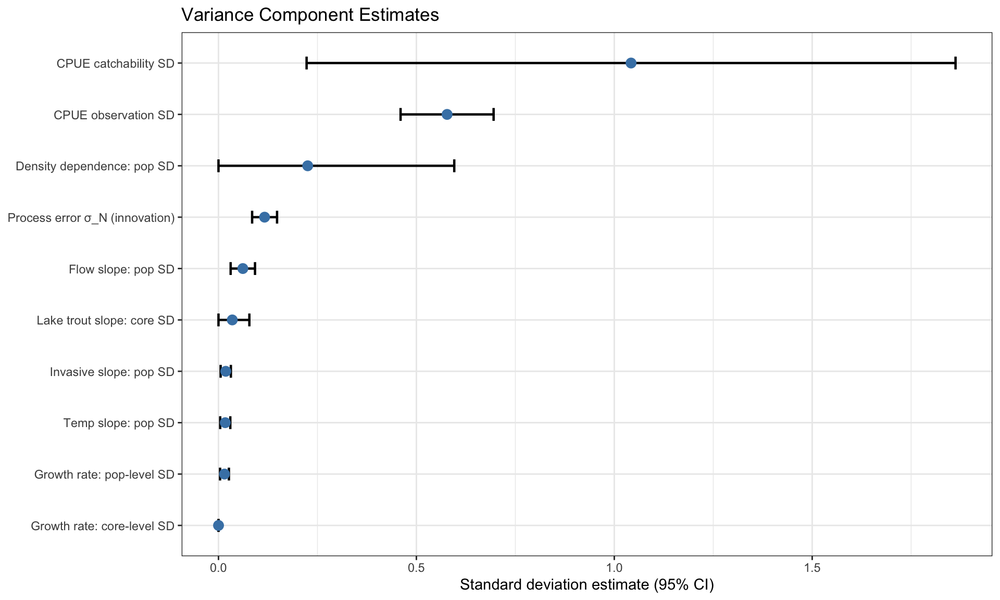
Summary of estimated baseline growth rates and density dependence for each local population.
phi_pop <- exp(fit_rep$value[names(fit_rep$value) == "log_b0phi_pop"]) / 1000
data.frame(
Population = U_LocalPops_In,
`Core Area` = U_CoreAreas_In[pop_core_vec],
`b0r` = round(b0r_df$b0r, 3),
`b0r SE` = round(b0r_df$b0r_se, 3),
`phi (fish/km)` = round(phi_pop, 4)
) |>
kable(col.names = c("Population", "Core Area", "b0r", "SE", "φ (fish/km)"),
align = c("l", "l", "r", "r", "r")) |>
kable_styling(bootstrap_options = c("striped", "hover", "condensed"),
font_size = 13) |>
column_spec(1, bold = TRUE)| Population | Core Area | b0r | SE | φ (fish/km) |
|---|---|---|---|---|
| 09040001BLD | StMaryRiver | 0.271 | 0.101 | 0.0242 |
| 09040001KEN | StMaryRiver | 0.234 | 0.091 | 0.0422 |
| 09040001LEE | StMaryRiver | 0.269 | 0.105 | 0.0901 |
| 17010101CAL | KootenaiRiver | 0.224 | 0.081 | 0.0358 |
| 17010101OBR | KootenaiRiver | 0.225 | 0.074 | 0.0241 |
| 17010101PIP | KootenaiRiver | 0.195 | 0.084 | 0.0458 |
| 17010101QUA | KootenaiRiver | 0.163 | 0.075 | 0.0355 |
| 17010102WES | KootenaiRiver | 0.247 | 0.085 | 0.2434 |
| 17010104BOU | KootenaiRiver | 0.192 | 0.108 | 0.0355 |
| 17010201TWI | UpperClarkForkRiver | 0.293 | 0.097 | 0.0061 |
| 17010201WAR | UpperClarkForkRiver | 0.269 | 0.095 | 0.0320 |
| 17010202BOU | UpperClarkForkRiver | 0.256 | 0.089 | 0.0569 |
| 17010202EAS | RockCreek | 0.270 | 0.103 | 0.0050 |
| 17010202HOG | RockCreek | 0.132 | 0.097 | 0.0324 |
| 17010202MID | RockCreek | 0.271 | 0.090 | 0.0497 |
| 17010202RAN | RockCreek | 0.183 | 0.088 | 0.0607 |
| 17010202ROS | RockCreek | 0.275 | 0.099 | 0.1496 |
| 17010202STO | RockCreek | 0.153 | 0.075 | 0.0280 |
| 17010202WEL | RockCreek | 0.143 | 0.096 | 0.0584 |
| 17010203BLM | BlackfootRiver | 0.116 | 0.086 | 0.0236 |
| 17010203GLD | BlackfootRiver | 0.188 | 0.080 | 0.0445 |
| 17010203LND | BlackfootRiver | 0.218 | 0.078 | 0.0247 |
| 17010203MNT | BlackfootRiver | 0.246 | 0.077 | 0.0161 |
| 17010203NFB | BlackfootRiver | 0.319 | 0.090 | 0.0184 |
| 17010204FIS | MiddleClarkForkRiver | 0.299 | 0.092 | 0.0536 |
| 17010204RAT | MiddleClarkForkRiver | 0.225 | 0.077 | 0.0288 |
| 17010206BIG | FlatheadLake | 0.304 | 0.087 | 0.0827 |
| 17010206COA | FlatheadLake | 0.292 | 0.084 | 0.1204 |
| 17010206KSH | FlatheadLake | 0.246 | 0.097 | 0.0888 |
| 17010206LLG | LoggingLake | 0.269 | 0.105 | 0.0398 |
| 17010206RDM | FlatheadLake | 0.165 | 0.122 | 0.2173 |
| 17010206TRL | FlatheadLake | 0.283 | 0.091 | 0.0357 |
| 17010206WHA | FlatheadLake | 0.292 | 0.091 | 0.0489 |
| 17010207BEA | FlatheadLake | 0.239 | 0.101 | 0.0648 |
| 17010207BWL | FlatheadLake | 0.244 | 0.096 | 0.0083 |
| 17010207CLK | FlatheadLake | 0.197 | 0.097 | 0.0607 |
| 17010207GRA | FlatheadLake | 0.275 | 0.094 | 0.0462 |
| 17010207LNG | FlatheadLake | 0.252 | 0.085 | 0.0225 |
| 17010207LNY | FlatheadLake | 0.274 | 0.090 | 0.0625 |
| 17010207LPK | FlatheadLake | 0.201 | 0.085 | 0.0705 |
| 17010207MOR | FlatheadLake | 0.323 | 0.098 | 0.0892 |
| 17010207OLE | FlatheadLake | 0.274 | 0.089 | 0.0414 |
| 17010207SCH | FlatheadLake | 0.299 | 0.091 | 0.1046 |
| 17010207STW | FlatheadLake | 0.263 | 0.096 | 0.1110 |
| 17010209BSM | BigSalmonLake | 0.459 | 0.107 | 0.0284 |
| 17010209GRD | HungryHorseReservoir | 0.460 | 0.108 | 0.0494 |
| 17010209LSM | HungryHorseReservoir | 0.463 | 0.111 | 0.0557 |
| 17010209SLV | HungryHorseReservoir | 0.424 | 0.097 | 0.0829 |
| 17010209WBC | HungryHorseReservoir | 0.383 | 0.097 | 0.0679 |
| 17010209WHE | HungryHorseReservoir | 0.396 | 0.099 | 0.1072 |
| 17010209WRV | HungryHorseReservoir | 0.447 | 0.109 | 0.0493 |
| 17010209YNG | HungryHorseReservoir | 0.477 | 0.115 | 0.0598 |
| 17010211CLD | SwanLake | 0.332 | 0.084 | 0.1353 |
| 17010211ELK | SwanLake | 0.392 | 0.085 | 0.0081 |
| 17010211GOA | SwanLake | 0.358 | 0.091 | 0.0258 |
| 17010211JIM | SwanLake | 0.354 | 0.084 | 0.0277 |
| 17010211LON | SwanLake | 0.360 | 0.078 | 0.0206 |
| 17010211LST | SwanLake | 0.341 | 0.087 | 0.0800 |
| 17010211PIP | SwanLake | 0.242 | 0.109 | 0.0733 |
| 17010211SOU | SwanLake | 0.297 | 0.100 | 0.1939 |
| 17010211WDW | SwanLake | 0.339 | 0.092 | 0.0159 |
Generated with Quarto · Model code at github.com/timothycline/BullTroutSSP